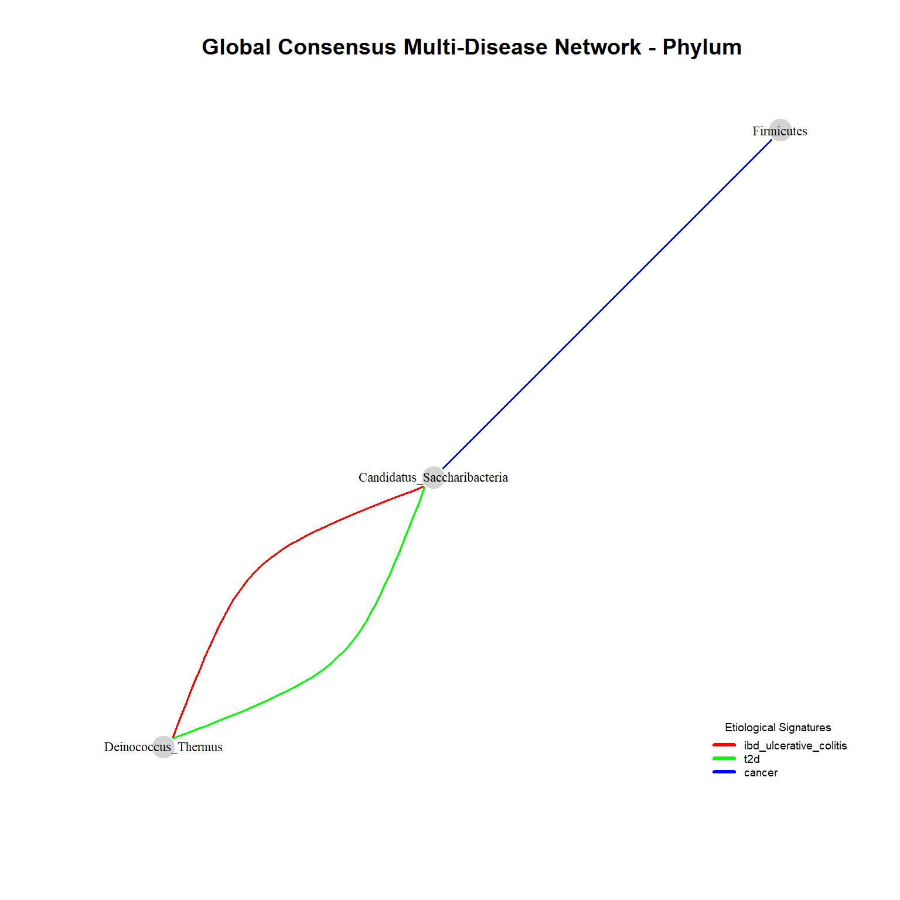
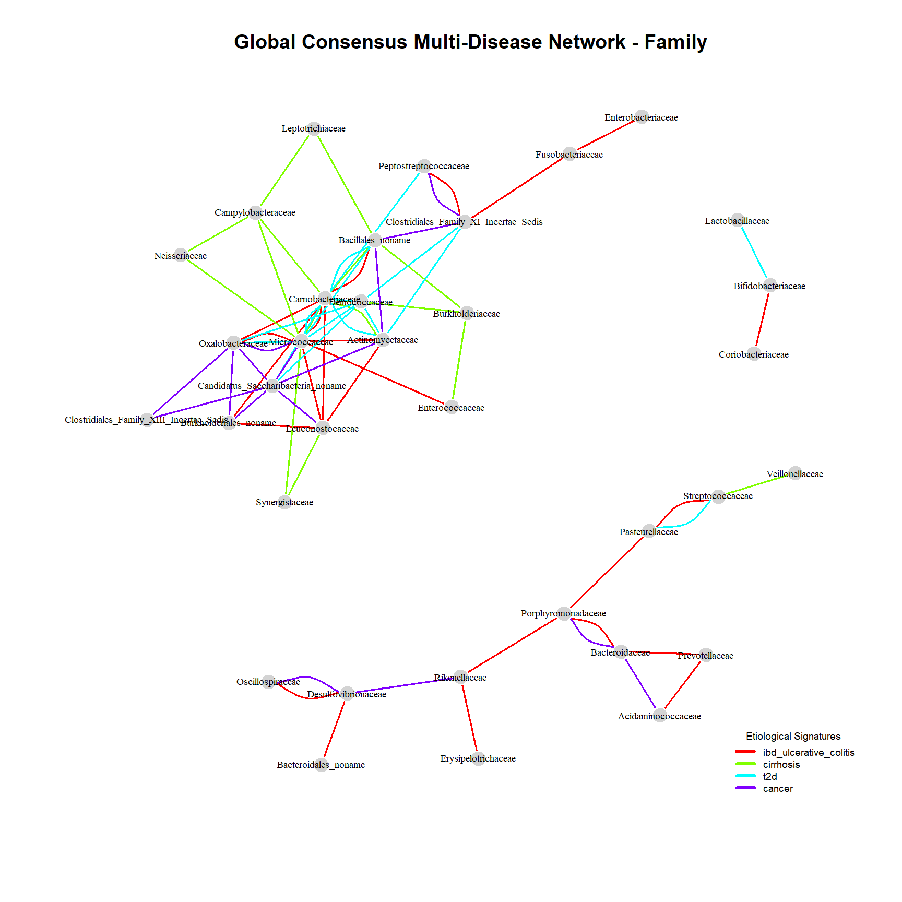
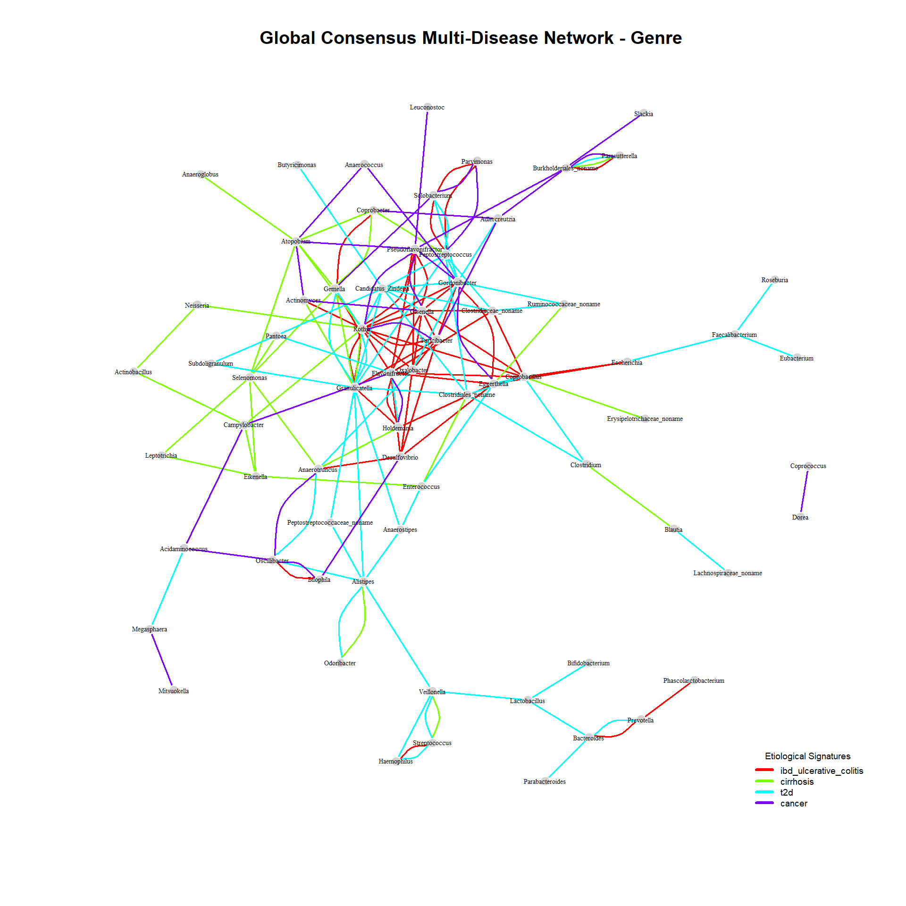

source("inputData.R")
Attachement du package : 'dplyr'Les objets suivants sont masqués depuis 'package:stats':
filter, lagLes objets suivants sont masqués depuis 'package:base':
intersect, setdiff, setequal, union
Attachement du package : 'dplyr'Les objets suivants sont masqués depuis 'package:stats':
filter, lagLes objets suivants sont masqués depuis 'package:base':
intersect, setdiff, setequal, unionThis document presents an integrated network analysis of the human gut microbiota across different pathological conditions (ibd_ulcerative_colitis, cirrhosis, t2d, cancer). The primary goal is to evaluate how microbial populations reorganize, compete, or cooperate depending on the host’s disease state.
To ensure the statistical robustness of the inferred interactions and to eliminate false positives inherent to the compositional nature of metagenomic sequencing data, we implement a consensus network approach inspired by the OneNet-mean framework. We combine three distinct mathematical network inference methodologies: 1. SpiecEasi (MB): Neighborhood selection based on the Meinshausen-Bühlmann framework. 2. SpiecEasi (Glasso): Global covariance matrix inversion using Graphical Lasso. 3. SparCC: Correlation modeling explicitly tailored for high-dimensional compositional count data.
An interaction (edge) is validated in the final consensus network if it is independently confirmed by at least 2 out of the 3 methods (majority vote threshold \(\ge 0.66\)).
The baseline phyloseq object used throughout this pipeline is named metagenomics and is automatically loaded via the Quarto preliminary inclusion file.
Before detailing the algorithms, it is critical to address the compositional data problem. Metagenomic sequencing yields relative abundances (proportions constrained to a sum of 1), not absolute cell counts. Applying standard Pearson or Spearman correlations directly to such data produces spurious correlations. To mitigate this, both SPIEC-EASI algorithms first apply a Centered Log-Ratio (CLR) transformation to the abundance vector \(x\):
\[z_i = \log\left(\frac{x_i}{g(x)}\right)\]
(where \(g(x)\) represents the geometric mean of all taxa abundances).
The Concept: Instead of calculating the global network covariance at once, the MB method treats network inference as a set of separate supervised machine-learning problems. For each taxon, it performs a regression to predict its CLR-abundance using the abundances of all other taxa.
The Mathematics: For a specific node \(j\), the algorithm solves a sparse linear regression using the Lasso (\(L_1\)) penalty to identify which other nodes (\(\setminus j\)) best predict its variance. The objective function minimized is:
\[\min_{\beta_j} \left( \frac{1}{2n} \| z_j - Z_{\setminus j} \beta_j \|^2_2 + \lambda \| \beta_j \|_1 \right)\]
Edge Generation: An undirected edge is drawn between node \(i\) and node \(j\) if either \(\beta_{j}^{(i)} \neq 0\) or \(\beta_{i}^{(j)} \neq 0\).
The Concept: Glasso utilizes a global estimation approach. Assuming a multivariate normal distribution of the CLR-transformed data, two variables are conditionally independent (i.e., no edge exists between them) if their corresponding entry in the precision matrix (the inverse of the covariance matrix) is exactly zero. Glasso estimates this sparse precision matrix directly.
The Mathematics: Let \(S\) be the empirical covariance matrix of the CLR-transformed data \(Z\). Glasso seeks the precision matrix \(\Theta\) (where \(\Theta = \Sigma^{-1}\)) that maximizes the penalized log-likelihood of the data:
\[\min_{\Theta \succ 0} \left( \text{tr}(S\Theta) - \log(\det(\Theta)) + \lambda \| \Theta \|_1 \right)\]
Edge Generation: An undirected edge is retained between node \(i\) and node \(j\) if the estimated entry in the precision matrix satisfies \(\Theta_{ij} \neq 0\).
The Concept: Unlike SPIEC-EASI, SparCC bypasses the CLR transformation. Instead, it relies on the variance of log-ratios between pairs of taxa. It operates under the assumption that the true underlying microbial network is sparse (most taxa do not biologically interact) and leverages this assumption to approximate the true linear correlation from the compositional data.
The Mathematics: Let \(t_{ij}\) denote the variance of the log-ratio of the compositional abundances of taxa \(i\) and \(j\):
\[t_{ij} = \text{Var}\left(\log\left(\frac{x_i}{x_j}\right)\right)\]
According to the laws of variance, this metric relates to the true (unknown) absolute abundances \(\omega_i\) and \(\omega_j\), and their true correlation coefficient \(\rho_{ij}\):
\[t_{ij} = \text{Var}(\log \omega_i) + \text{Var}(\log \omega_j) - 2 \rho_{ij} \sqrt{\text{Var}(\log \omega_i)\text{Var}(\log \omega_j)}\]
Because this system has more unknowns (\(\rho_{ij}\) and the basis variances) than equations, it is underdetermined. SparCC approximates a solution iteratively by enforcing the sparsity assumption:
\[\sum_{j \neq i} \rho_{ij} \approx 0\]
Edge Generation: SparCC outputs a correlation matrix. In this pipeline, an edge is established if the absolute value of the SparCC correlation coefficient exceeds a predefined threshold: \(|\rho_{ij}| \geq 0.4\).
Once the three independent methodologies compute their respective unweighted adjacency matrices (\(A^{MB}, A^{Glasso}, A^{SparCC}\) where edges \(= 1\) and non-edges \(= 0\)), the pipeline calculates the arithmetic mean for every possible edge across the three models:
\[A^{mean}_{ij} = \frac{A^{MB}_{ij} + A^{Glasso}_{ij} + A^{SparCC}_{ij}}{3}\]
To eliminate algorithmic artifacts and increase the positive predictive value of the interactions, the final network applies a strict majority vote. Any edge where \(A^{mean}_{ij} < 0.66\) is dropped, ensuring that every retained connection in the final model has been mathematically validated by at least two distinct inference strategies.
-> Inferring sub-network for group: ibd_ulcerative_colitis ... -> Inferring sub-network for group: cirrhosis ... -> Inferring sub-network for group: t2d ... -> Inferring sub-network for group: cancer ...| Tax_Level | Disease_Cohort | Nodes_Count | Edges_Count | Graph_Density | Average_Degree |
|---|---|---|---|---|---|
| Phylum | ibd_ulcerative_colitis | 8 | 1 | 0.036 | 0.25 |
| Phylum | cirrhosis | 9 | 0 | 0.000 | 0.00 |
| Phylum | t2d | 9 | 1 | 0.028 | 0.22 |
| Phylum | cancer | 7 | 1 | 0.048 | 0.29 |

At the Phylum level, the global consensus network exhibits extremely low density and highly limited interactions. This layout exemplifies the concept of functional redundancy and the mathematical smoothing effect.
Major phyla (such as Firmicutes or Bacteroidetes) contain thousands of distinct bacterial species operating in opposing ecological niches—some acting as anti-inflammatory symbionts, others as pro-inflammatory pathobionts. Agglomerating raw counts at this macro-level forces opposing ecological signals to cancel each other out, neutralizing detectable mathematical covariances. Thus, descending to finer taxonomic resolutions is biologically mandatory.
-> Inferring sub-network for group: ibd_ulcerative_colitis ... -> Inferring sub-network for group: cirrhosis ... -> Inferring sub-network for group: t2d ... -> Inferring sub-network for group: cancer ...| Tax_Level | Disease_Cohort | Nodes_Count | Edges_Count | Graph_Density | Average_Degree |
|---|---|---|---|---|---|
| Family | ibd_ulcerative_colitis | 34 | 24 | 0.043 | 1.41 |
| Family | cirrhosis | 37 | 15 | 0.023 | 0.81 |
| Family | t2d | 36 | 16 | 0.025 | 0.89 |
| Family | cancer | 37 | 16 | 0.024 | 0.86 |

The Family level provides an ideal analytical sweet spot, revealing clear pathological restructuring and disease-specific modular guilds:
Fusobacteriaceae and Enterobacteriaceae at the bottom of the graph is a classic etiological hallmark of acute bowel inflammation. These two facultative anaerobic pathobionts exploit the host’s oxidative stress to bloom concurrently, outcompeting obligate anaerobic symbionts and exacerbating mucosal ulcerations. -> Inferring sub-network for group: ibd_ulcerative_colitis ... -> Inferring sub-network for group: cirrhosis ... -> Inferring sub-network for group: t2d ... -> Inferring sub-network for group: cancer ...| Tax_Level | Disease_Cohort | Nodes_Count | Edges_Count | Graph_Density | Average_Degree |
|---|---|---|---|---|---|
| Genre | ibd_ulcerative_colitis | 64 | 46 | 0.023 | 1.44 |
| Genre | cirrhosis | 70 | 30 | 0.012 | 0.86 |
| Genre | t2d | 64 | 57 | 0.028 | 1.78 |
| Genre | cancer | 73 | 29 | 0.011 | 0.79 |

At the Genus level, the pipeline reaches a high-resolution window, critical for identifying precise therapeutic targets or key probiotic leads (e.g., Faecalibacterium, Akkermansia).
At this scale, data sparse properties significantly expand due to zero-inflation (rare genera present only in a subset of individuals). Elevating the prevalence filtering threshold to 20% effectively trims down background noise and isolates true Microbial Hubs (keystone genera driving network topology). The genus-level statistics document a sharp topological collapse (marked by decreased network density and average degree) under diseased states, tracking the loss of metabolic resilience and the fragmentation of cooperative trophic networks in the severely compromised gut ecosystem.
This study demonstrates the immense value of using a consensus-based network inference approach to decode the complex dynamics of the gut microbiome across different chronic diseases. By combining neighborhood selection (MB), global precision matrix estimation (Glasso), and compositional correlation modeling (SparCC), we successfully mitigated the inherent statistical biases of metagenomic data, yielding highly robust and biologically relevant microbial interaction networks.
The multi-scale taxonomic analysis revealed that while macroscopic levels (Phylum) suffer from functional redundancy and signal smoothing, the Family and Genus levels provide critical insights into disease-driven ecological restructuring. Our findings highlight two major phenomenons within the dysbiotic gut: 1. Disease-Specific Etiological Guilds: As seen with liver cirrhosis, where a highly interconnected sub-network of oral-derived families (Neisseriaceae, Campylobacteraceae) indicates a severe failure of the host’s gastric and immune barriers. 2. Shared Axes of Dysbiosis: As evidenced by the overlapping structural shifts between Inflammatory Bowel Disease (IBD) and Colorectal Cancer, driven by sulfate-reducing and pro-inflammatory pathobionts (Desulfovibrionaceae, Fusobacteriaceae).
Ultimately, these network topologies show that chronic diseases do not merely alter the abundance of isolated bacteria; they trigger a systemic collapse of the microbial ecosystem’s connectivity and metabolic resilience.